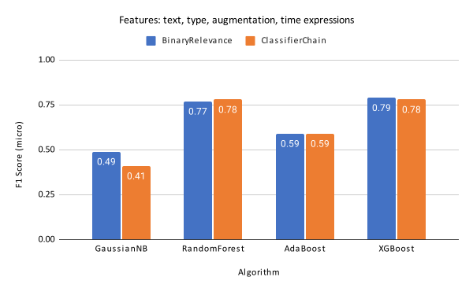

Text Features Statistics
The advertools,
TextBlob and
Codeq-NLP
Python packages were used to engineer a number of text features which were shown to be
statistically significantly different across varying app category types, as is
illustrated in the table below:
| Feature |
χ2 |
p |
| count_stopwords |
31526.06 |
<0.01 |
| count_emojis |
56577.36 |
<0.01 |
| count_capital_words |
16594.54 |
<0.01 |
| count_characters |
26342.83 |
<0.01 |
| avg_word_length |
18291.99 |
<0.01 |
| count_words |
22336.36 |
<0.01 |
| count_numeric_chars |
17007.64 |
<0.01 |
Classification Algorithms
Related research has shown that the following Machine Learning algorithms have worked well in classification tasks:
-
Naive Bayes:
Zhang, H. (2004). The optimality of naive Bayes. In: Proceedings of the the 17th International FLAIRS conference (FLAIRS2004). p. 562-567. URL:
https://www.aaai.org/Papers/FLAIRS/2004/Flairs04-097.pdf
-
Random Forest:
Breiman, L. (2001). Random Forests. Machine Learning, 45(1), p. 5-32. URL:
https://doi.org/10.1023/A:1010933404324
-
AdaBoost:
Hastie, T., Rosset, S., Zhu, J., & Zou, H. (2009). Multi-class AdaBoost. Statistics and its Interface, 2(3), p. 349-360. URL:
https://dx.doi.org/10.4310/SII.2009.v2.n3.a8
-
XGBoost:
Chen, T., & Guestrin, C. (2016). XGBoost: A Scalable Tree Boosting System. In: Proceedings of the 22nd ACM SIGKDD International Conference on Knowledge Discovery and Data Mining (KDD'16). p. 785-794. URL:
https://doi.org/10.1145/2939672.2939785
The annotated dataset was split into train (80%) and test (20%) sets and two problem transformation approaches were applied for facilitating multi-label classification:
- Classifier Chains: for every urgency label, a classifier was created and ordered as a chain such that the first classifier ingested only input features and the subsequent classifiers ingested the input features and outputs of the previous classifiers in turn. More information
- Binary Relevance: for every urgency label, a single binary-classifier was created. The final output was the union of predictions made by each individual classifier.
Experiment 3 - Time Expressions
List of works used to extract time expressions from the notification text:
-
SemEval-2013 Task 1 - TempEval-3:
UzZaman, N., Llorens, H., Derczynski, L., Allen, J., Verhagen, M., & Pustejovsky, J. (2013). Evaluating time expressions, events, and temporal relations. In Second Joint Conference on Lexical and Computational Semantics (* SEM), Volume 2: Proceedings of the Seventh International Workshop on Semantic Evaluation (SemEval 2013). p. 1-9. URL:
https://aclanthology.org/S13-2001.pdf
-
SemEval-2007 Task 15:
Verhagen, M., Gaizauskas, R., Schilder, F., Hepple, M., Katz, G., & Pustejovsky, J. (2007). TempEval Temporal Relation Identification. In Proceedings of the 4th International Workshop on Semantic Evaluations (SemEval-2007). p. 75-80. URL:
https://aclanthology.org/S07-1014.pdf
-
SemEval-2010 Task 13: TempEval-2:
Verhagen, M., Sauri, R., Caselli, T., & Pustejovsky, J. (2010). SemEval-2010 Task 13: TempEval-2. In Proceedings of the 5th International Workshop on Semantic Evaluation. p. 57-62. URL:
https://aclanthology.org/S10-1010.pdf
-
SemEval-2018 Task 6:
Laparra, E., Xu, D., Elsayed, A., Bethard, S., & Palmer, M. (2018). Parsing Time Normalizations. In Proceedings of the 12th International Workshop on Semantic Evaluation (SemEval-2018). p. 88-96. URL:
https://aclanthology.org/S18-1011.pdf
-
SemEval-2021 Task 10:
Laparra, E., Su, X., Zhao, Y., Uzuner, O., Miller, T., & Bethard, S. (2021). Source-free domain adaptation for semantic processing. In Proceedings of the 15th International Workshop on Semantic Evaluation (SemEval-2021). p. 348-356. URL:
https://aclanthology.org/2021.semeval-1.42/
The figure below shows the performance improvement of the urgency classification algorithms
when time-expression information was included as an input feature.

The table below illustrates the 10 most frequent time-expressions identified.
| Time-expression Label |
Num. Notifications |
| B-Calendar-Interval |
2148 |
| B-This |
1288 |
| B-Period |
830 |
| B-Number |
658 |
| B-Frequency |
574 |
| B-After |
440 |
| B-Year |
366 |
| B-Part-Of-Day |
322 |
| B-Season-Of-Year |
287 |
| B-Last |
267 |